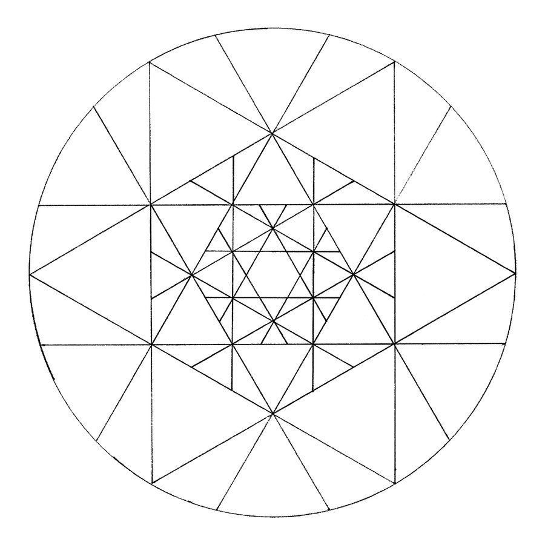
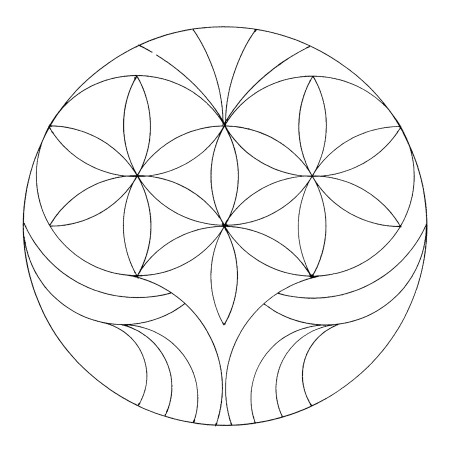
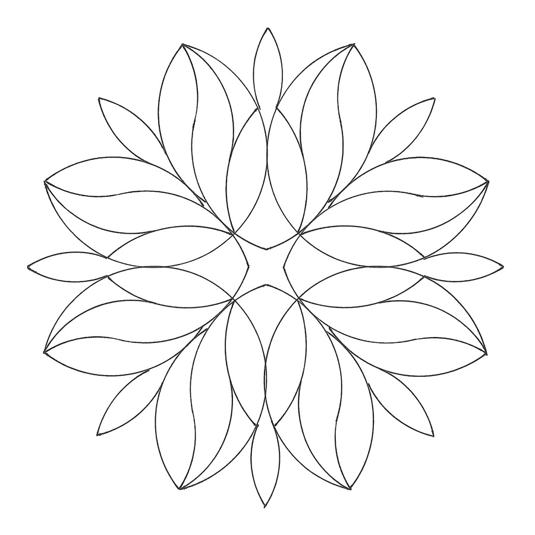
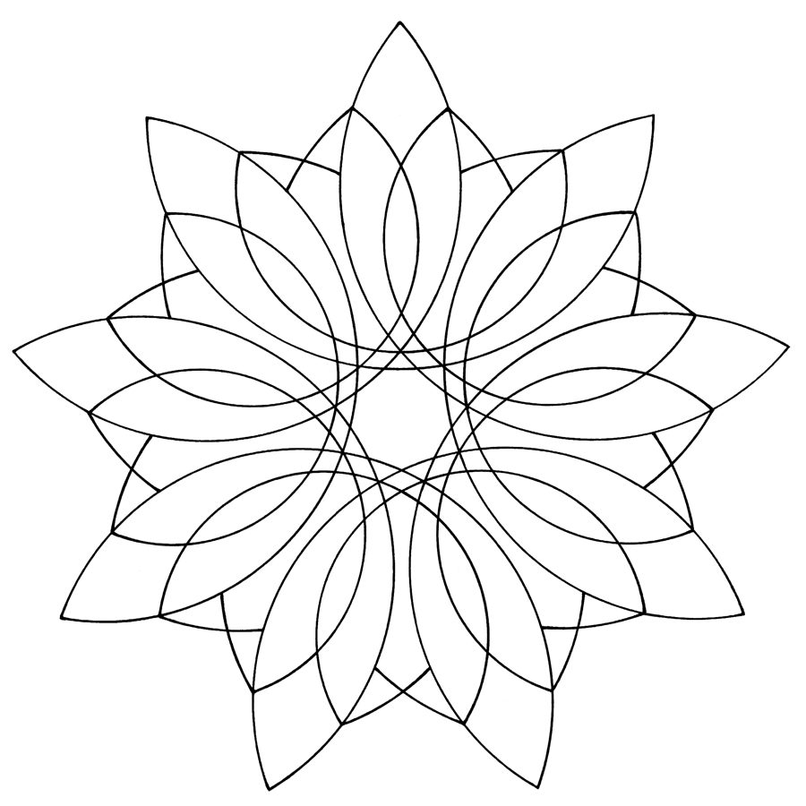

Mandala je kruh. Tvar, co nikde nezačíná a nikde nekončí — dokonalá křivka, dokonalá rovnováha.
Mandala je cesta. Můžeme jít od středu ven, nebo zvenčí dovnitř — je to jedno, mandala nás sama vede, ona volí směr a my se na ni vydáváme, vedeni jejím záměrem.
Mandala je přítel. Ví o nás všechno a přitom nás má stejně ráda. Můžeme se jí svěřit se všemi starostmi i radostmi a ona nám pomáhá je zvládnout a vytěžit z nich to nejlepší.
Mandala je léčitel. Pomáhá překonat smutek, dokáže uklidnit zjitřenou mysl i dobít energii, když dochází. Harmonizuje, když ji tvoříme, a působí i dlouho po dokončení.
Mandala je učitel. Skrze ni objevujeme sami sebe. Učí nás mít se rádi takoví, jací jsme ve svém nitru, a překonat strach ze změny.
Mandala je návrat. Díky ní se znovu stáváme dítětem — zase si hrajeme, objevujeme nové a nepoznané a zažíváme u toho vzrušení a radost místo strachu.
Krátké vysvětlení, co se při vybarvování mandaly děje.
V běžném životě používáme hlavně levou mozkovou hemisféru — logiku, lineární myšlení, detaily. Pravá polokoule vnímá celek, je intuitivní. Malováním mandal se učíme používat obě najednou, což vede ke zklidnění mysli a uvolnění vnitřního napětí.
Jako relaxační technika mandala nevyžaduje žádné zvláštní schopnosti ani znalosti — dokážou ji malovat úplně všichni bez rozdílu. Stačí pastelky a chvíle klidu.
Mandalám se věnuji už 40 let. Postupně jsem si uvědomila, že v jednoduchosti je nejen krása, ale i nejsilnější účinek a největší výzva. Zpočátku byly i moje mandaly členitější a složitější — snadno se vybarvovaly a hodně se líbily. Pak jsem zjistila, že mnohem těžší je nechat mandalu při jejím vzniku jednoduchou. A vybarvit takovou mandalu je ještě těžší — je při tom třeba mnohem víc přemýšlet.
Mandala je obrazem života. Udělat ho komplikovaným jde snadno — zasahuje do něj mnoho vlivů a nám se zdá, že život je složitý. Jenže záleží jen na nás, do jaké míry se staneme obětí všech těch vnějších i vnitřních vlivů. Zdají-li se vám naše mandaly příliš jednoduché, zkuste si je nejdřív vybarvit takové, jaké jsou. Možná vás překvapí, jak těžké je nechat věci jednoduché. A jestli je přeci jen chcete mít složitější, klidně si sami doplňte pár čar. Ať už jednoduché nebo složitější, důležité je, aby se vám mandaly co nejvíc líbily.
Žádný generátor ani šablona.
Nejjednodušší způsob — čistý papír a kreslení od středu ven nebo zvenčí dovnitř, bez pravidel kromě těch, která si zvolíme sami.
Konstruovaná mandala vychází z geometrických tvarů, je souměrná a dá se znovu a znovu vybarvovat. Přesně tímhle způsobem vznikají naše kalendářové mandaly.
Nejsnazší cesta k mandale — stačí si vybrat tu, která vás osloví, a nechat barvy, ať samy naleznou svůj řád.
Pár mandal z dřívějších kalendářů.




Jmenuji se Karolína Kofroňová a mandaly mě provázejí celý život. Tvořím je, vybarvuji, vedu kurzy, pořádám mandalové dýchánky. Ráda si o nich s lidmi povídám a zvu je k tomu, aby je taky tvořili. Díky nim jsem si objevila a uvědomila spoustu věcí o sobě i o světě.
Moje osobní zkušenosti s mandalami jsou v podstatě jen pozitivní. Seznámila jsem se s nimi ještě jako malá holka — tatínek se zajímal o jógu a východní filosofii, takže jsem se k mandalám dostala, aniž bych se o to musela jakkoli snažit.
Zpátky do mého života se vrátily přes mé děti. Když syn a dcera začali vybarvovat mandaly ve školce a ve škole, vzpomněla jsem si, jak blahodárně působí i na mě. Postupně jsme s dětmi začali mandaly nejen vybarvovat, ale i tvořit — a o pár let později nás náhoda přivedla na nápad udělat mandalový kalendář. Dnes už kalendáře nejen dáváme jako dárky, ale i prodáváme.